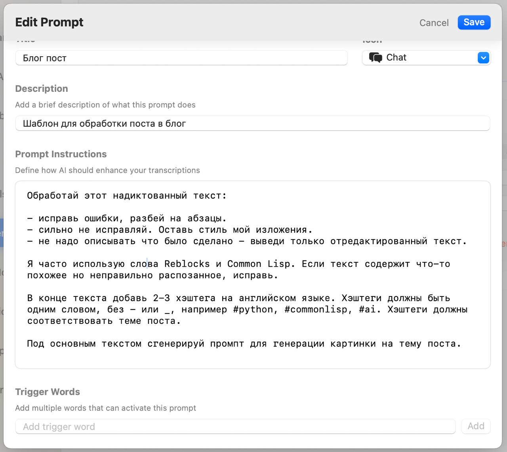

VoiceInk - opensource альтернатива для SuperWhisper
Tagged as ai, automation, voice
Written on 2025-06-16

Некоторое время назад я посетил семинар, посвященный вайб-кодингу. Там коллега в лайв-режиме показывал, как он создает код с помощью нейросети, используя голосовой ввод. Я очень удивился, потому что стандартный голосовой ввод на маке часто путает слова. Когда ты диктуешь ему по-русски, он часто неправильно воспринимает текст, если в нем используются английские термины, например, названия функций. Голосовой ввод на маках все это путает и выводит в лучшем случае что-то неразборчивое или далекое от того, что ты просил.
После семинара я спросил коллегу, что он использует для голосового ввода. Оказалось, что он использует программу SuperWhisper. Я посмотрел на эту программу и увидел, что она требует подписки, а платежи из России, как понимаете, выполняются сложно. Кроме того, мне не хотелось вязываться в какой-то vendor-lock, когда производители программы могут просто отказаться принимать платежи от россиян или как-то иначе заблокировать свой продукт на нашей территории. Поэтому я решил поискать open-source решение, аналогичное SuperWhisper.
И такое решение я нашел! Программа называется VoiceInk. VoiceInk выполняет похожую задачу и достаточно качественно разбирает текст. Настолько хорошо, что после того, как я надиктовал сообщение для блога, мне требуется всего лишь немного его отредактировать, поправив кое-где формулировки.
Самый большой прикол обеих этих программ в том, что они позволяют использовать специальный режим, когда сначала ваш голос распознается, а потом прогоняется дополнительно еще через нейронку с использованием отдельного промпта. И промпты могут быть разными для разных режимов.
Например, вы можете сделать отдельный промпт для того, чтобы писать заметки в блог. Можно сделать отдельный промпт для того, чтобы отвечать на e-mail коллегам или для того, чтобы твиты писать. Вот, например, я для VoiceInk сделал себе промпт, который вы видите на скриншоте к этому посту.
И этот промпт помимо того, что обрабатывает текст нужным мне образом, еще и добавляет к нему дополнительно хэштеги автоматически. И добавляет промпт для создания картинки. То есть я могу надиктовать пост в блог, потом взять, скопировать этот промптик для нейронки, который умеет генерировать картинки, и тут же сделать себе иллюстрацию к этому промпту.
Возможно, можно даже дальше пойти и научиться сделать какого-то агента, в котором можно просто целиком этот текст надиктованный закидывать и получать готовую публикацию в Телеграме уже с картинкой. Но эту автоматизацию я, может быть, сделаю позже. У меня есть идея попробовать N8N сервис для того, чтобы делать подобные штуки. Так что следите за обновлениями в блоге. Пока-пока!
ai #automation #voice
Created with passion by 40Ants